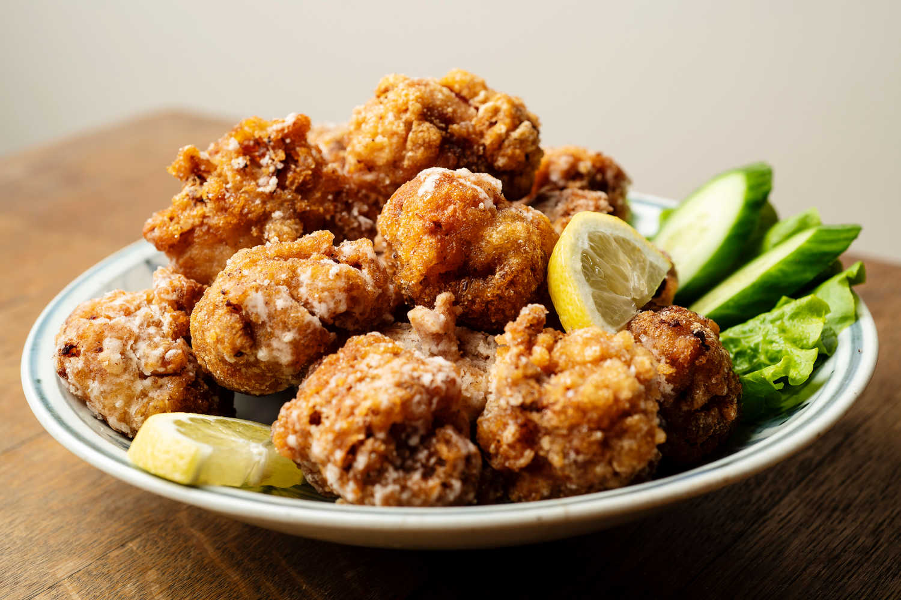

Karaage

Karaage is fried chicken, but not floating in grease and with delicious toppings!
- Chicken
- Garlic
- Sesame oil
- Mirin
- Oyster sauce
- Curry powder
- Egg yolk
- Japanese mayonaise
- Flour
- Potato starch
- Sunflower oil
- Mix the garlic, sesame oil, mirin, oyster sauce, curry powder and egg yolk together. Cut up the chicken and leave to marinate for 30 minutes.
- Lightly coat the chicken, shaking off excess flour so as not to cloud the oil.
- Fry twice, first at a lower temperature, then again on a higher heat to crisp.